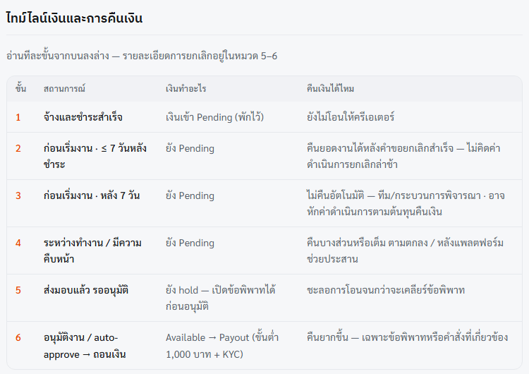
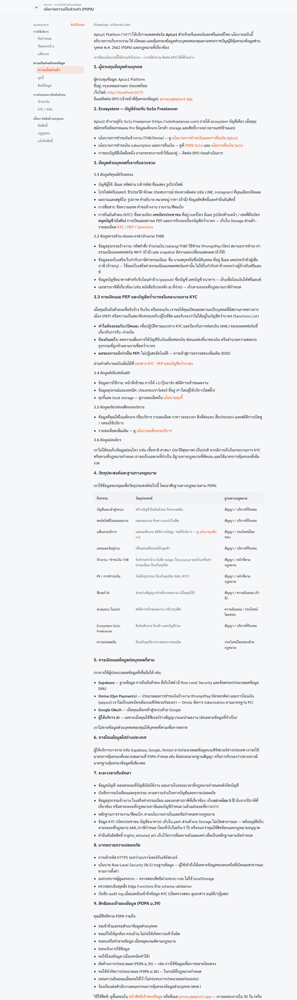
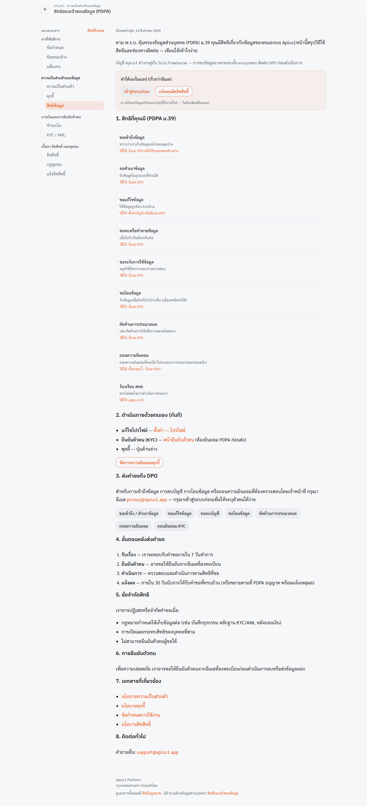
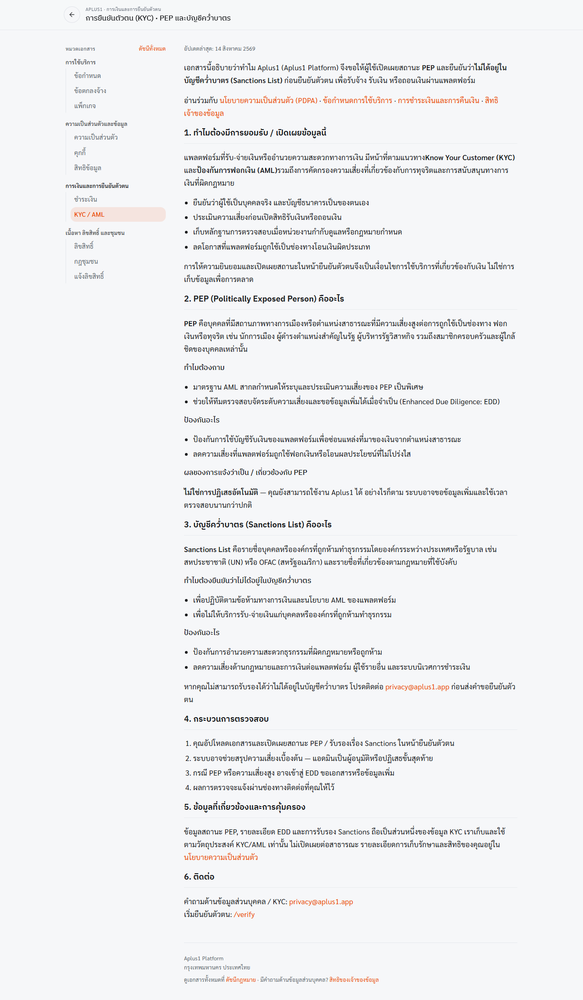
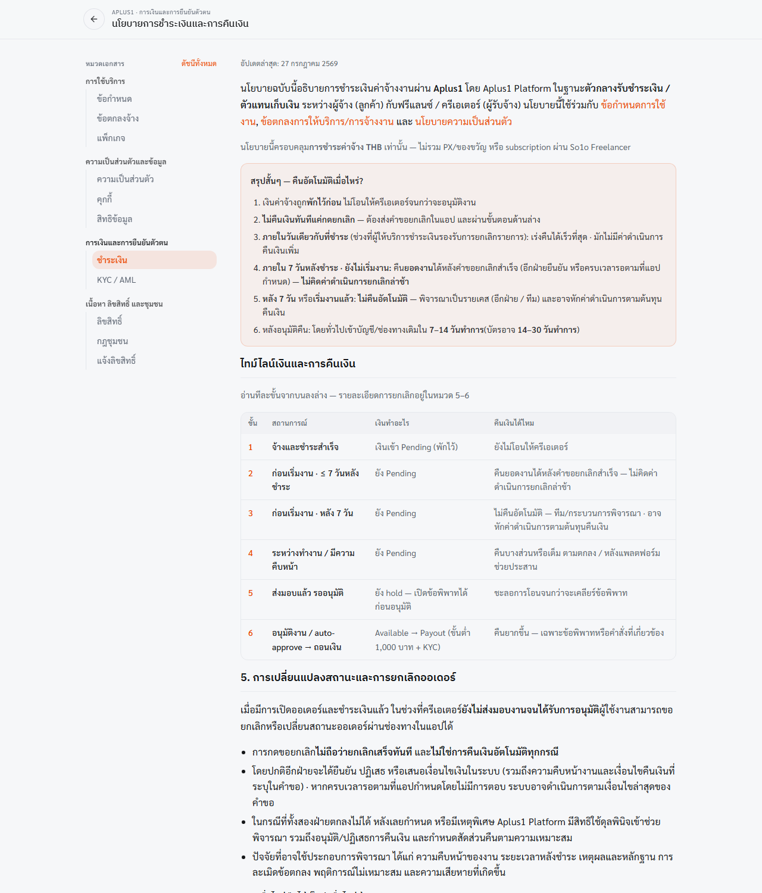
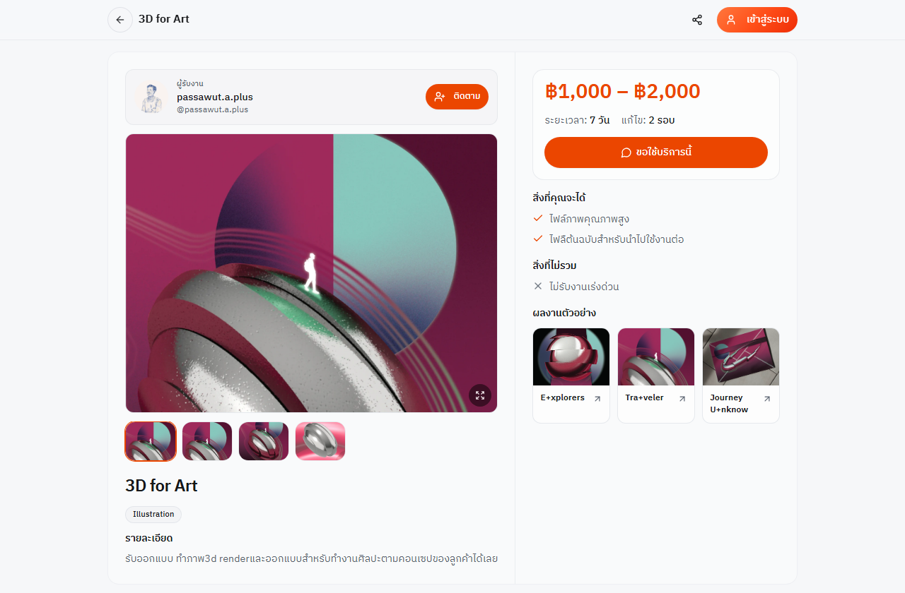
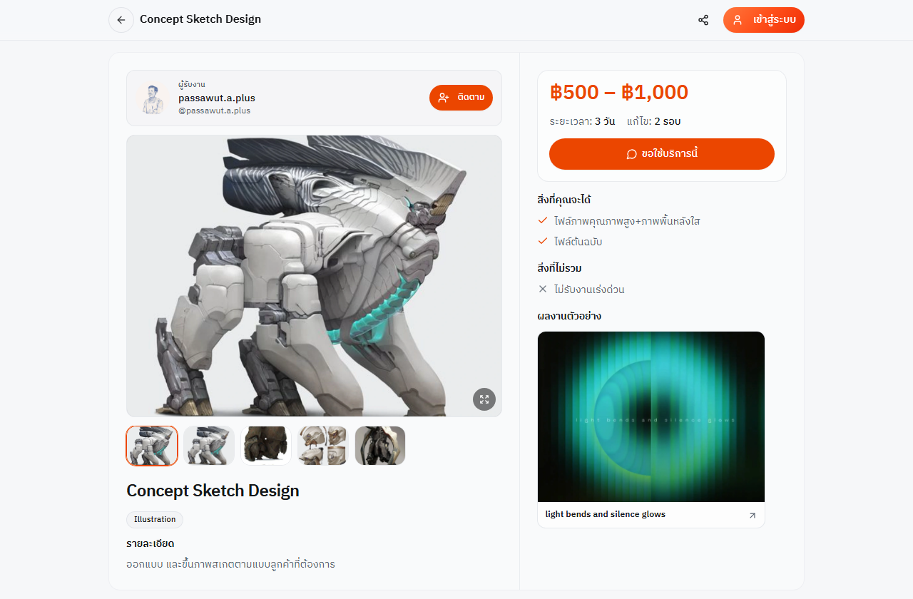
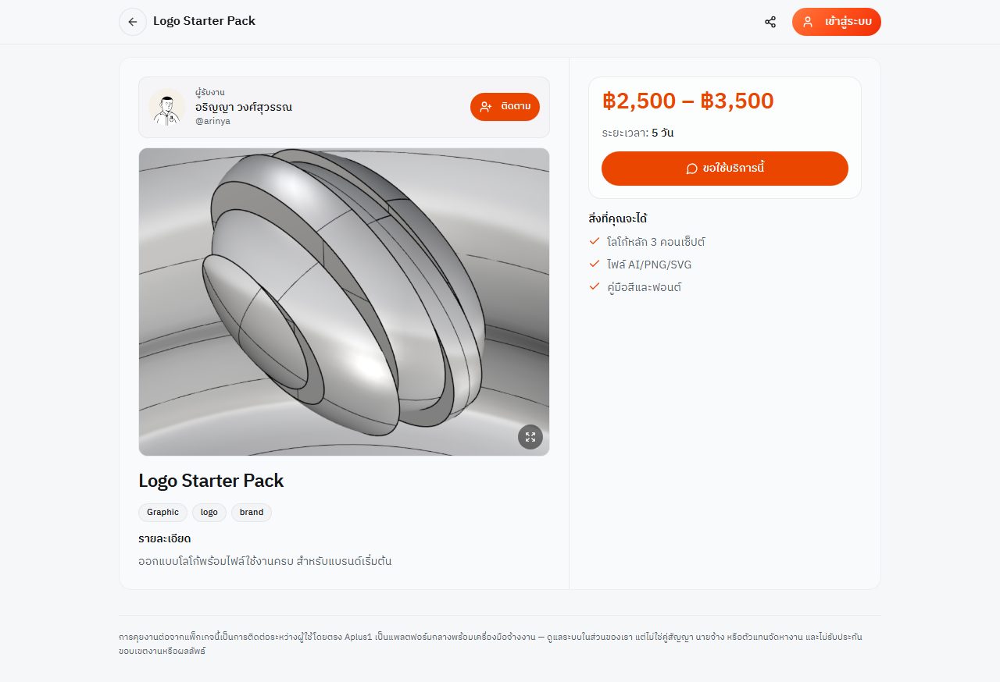
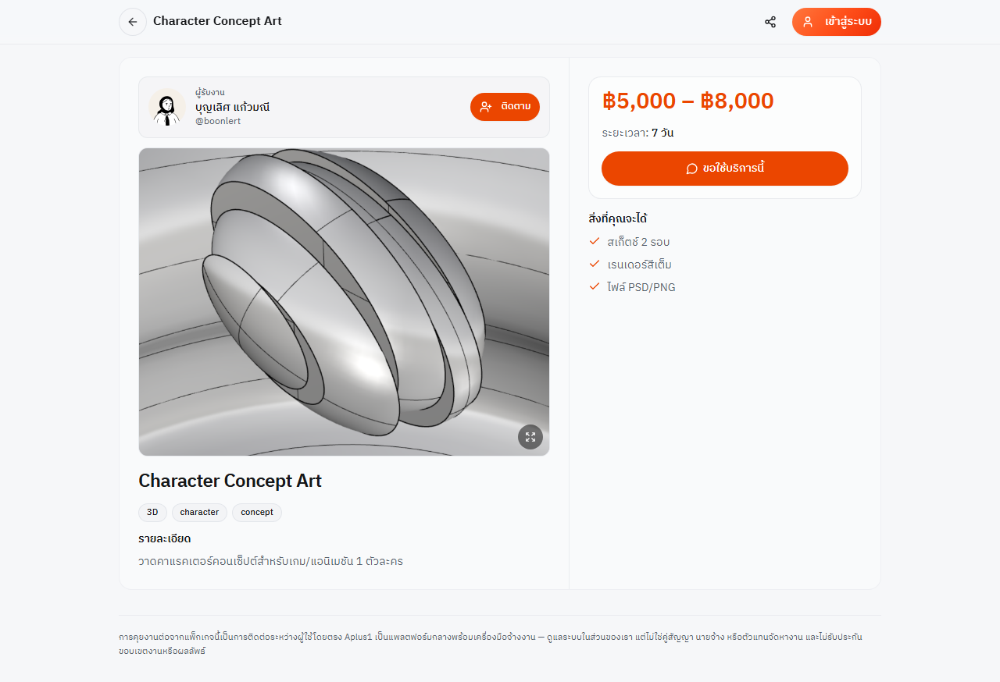

เสนอต่อ Payso (บริษัท เพย์ โซลูชั่น จำกัด) · อ้างอิงใบเสนอราคาเลขที่ Q-202607000297
ช่องสีเหลือง […] คือข้อมูลที่ผู้สมัครกรอกเอง · กรอบเส้นประ “แทรกภาพ” คือจุดแทรกภาพหน้าจอ (ดูรายการภาพในภาคผนวก)
Aplus1 เป็นเว็บไซต์ให้ครีเอทีฟ (นักออกแบบ นักวาด ช่างภาพ ฯลฯ) ลงผลงานและเปิดรับจ้างงานโดยตรง ลูกค้าค้นหาผลงาน ติดต่อผ่านแชทบนแพลตฟอร์ม รับใบเสนอราคา ชำระเงิน และรับงานที่ส่งมอบ
| หัวข้อ | รายละเอียด |
|---|---|
| บทบาทของเรา | ตัวกลางรับชำระเงิน / ตัวแทนเก็บเงิน ระหว่างผู้จ้าง (ลูกค้า) กับครีเอเตอร์ (ผู้รับจ้าง) เงินค่าจ้างที่ผู้จ้างชำระไม่ใช่รายได้ของแพลตฟอร์ม เป็นเงินของครีเอเตอร์ที่พักไว้รอโอนตามเงื่อนไข |
| รายได้ของแพลตฟอร์ม | ค่าธรรมเนียมแพลตฟอร์ม 10% ของราคางาน (ก่อนหัก ณ ที่จ่าย) เท่านั้น — บันทึกเป็นภาพถ่าย (snapshot) ตอนสร้างออเดอร์ ไม่เปลี่ยนย้อนหลัง |
| สินค้า/บริการที่ขาย | งานบริการสร้างสรรค์ของครีเอเตอร์ (แพ็กเกจบริการ/ใบเสนอราคาเฉพาะงาน) ไม่มีสินค้าที่ต้องจัดส่งทางกายภาพในระบบจ้างงาน |
| ช่องทางชำระที่ขอ | PromptPay QR เป็นช่องทางแรก · บัตรเครดิต/เดบิตเปิดภายหลังตามที่ Payso อนุมัติ |
| สกุลเงิน | บาท (THB) บันทึกเป็นหน่วยสตางค์ (จำนวนเต็ม) ภายใน หน้าจออาจแสดงสกุลอื่นเพื่อความสะดวกเท่านั้น |
| กลุ่มผู้ใช้ | ผู้ใช้อายุ 18 ปีขึ้นไป ในประเทศไทย |
| ข้อมูลตลาดปัจจุบัน | แพ็กเกจบริการที่ผู้ขายลงจริง 6 รายการ ราคา 1,000–12,000 บาท (ไม่นับข้อมูลตัวอย่างของระบบ) · ยังไม่เคยมีธุรกรรมชำระเงินจริงผ่านแพลตฟอร์ม |
เราไม่โอนเงินให้ครีเอเตอร์ทันทีหลังชำระ เพื่อคุ้มครองทั้งสองฝ่าย การโอนจากเราไปยังครีเอเตอร์ดำเนินการหลังได้รับเงินจาก Payso ตามรอบ (T+7) และเมื่อยอดถึงขั้นต่ำการถอน

แบ่งเป็น 2 ระดับ: บัญชีทั่วไป (ทุกคน) และ ข้อมูลยืนยันตัวตน KYC (เฉพาะผู้ที่ต้องการรับเงินหรือถอนเงิน)
| ข้อมูล | เก็บเมื่อไหร่ | ใครเห็น |
|---|---|---|
| อีเมล, วิธีล็อกอิน (อีเมล/Google) | สมัครใช้งาน | เจ้าของบัญชี · ผู้ดูแลระบบ |
| ชื่อที่แสดง, ชื่อผู้ใช้, รูปโปรไฟล์, คำแนะนำตัว, ลิงก์โซเชียล, เว็บไซต์ | ผู้ใช้กรอกเอง | สาธารณะ (ผู้ใช้เลือกเอง) |
| เบอร์โทร, LINE ID, ที่อยู่, วันเกิด, ข้อมูลออกเอกสาร (ชื่อนิติบุคคล/เลขผู้เสียภาษี/ที่อยู่ออกบิล) | ผู้ใช้กรอกในโปรไฟล์/ตั้งค่า (ไม่บังคับ ยกเว้นตอนออกเอกสารภาษี) | เจ้าของบัญชี · ผู้ดูแลระบบ · ไม่เปิดสาธารณะ (กำลังตรวจจำกัดคอลัมน์ที่มุมมองโปรไฟล์สาธารณะให้เหลือเท่าที่ต้องแสดง) |
| เนื้อหาที่ผู้ใช้ลง (ผลงาน คอมเมนต์ ข้อความแชท ไฟล์แนบ) | ใช้งาน | ตามการตั้งค่าเนื้อหา · แชทเห็นเฉพาะผู้ร่วมสนทนา (และผู้ดูแลเมื่อมีรายงาน) |
| บันทึกยินยอม (เวอร์ชันนโยบายที่ยอมรับ) และเวลา | ตอนยอมรับนโยบาย/ใบเสนอราคา | ผู้ดูแลระบบ |
| หมวด | ข้อมูลที่เก็บ |
|---|---|
| ข้อมูลติดต่อ | เบอร์โทร, อีเมลติดต่อ, LINE ID (ไม่บังคับ) |
| ข้อมูลตามบัตรประชาชน | ชื่อ, นามสกุล, เลขบัตรประชาชน 13 หลัก, วันเกิด (ต้องอายุ 18+), วันหมดอายุบัตร, สัญชาติ (ระบบกำหนดเป็นไทย), ที่อยู่ตามบัตร (บ้านเลขที่/ตำบล/อำเภอ/จังหวัด/รหัสไปรษณีย์) |
| เอกสารภาพ | รูปบัตรประชาชนด้านหน้า, เซลฟี่ถือบัตร, หน้าสมุดบัญชี (รูปหรือ PDF) |
| บัญชีรับเงิน | ชื่อธนาคาร, เลขบัญชี (อย่างน้อย 10 หลัก), ชื่อบัญชี (ต้องตรงกับเอกสาร), สำเนาสมุดบัญชี |
| แบบสำแดงความเสี่ยง | สถานะ PEP (บุคคลที่มีสถานภาพทางการเมือง — ถ้าใช่กรอกตำแหน่ง/หน่วยงาน/ความสัมพันธ์), การรับรองว่าไม่อยู่ในบัญชีคว่ำบาตร (Sanctions) |
| การยินยอมและรับรอง | PDPA consent (พร้อมเวอร์ชัน/เวลา), การรับรองความถูกต้องโดยพิมพ์คำว่า “CONFIRM”, ข้อมูลประกอบการส่ง (เบราว์เซอร์/อุปกรณ์ ภาษา เขตเวลา และเวอร์ชันฟอร์ม) |
| ผลการตรวจ | สถานะ (รอตรวจ / อนุมัติ / ปฏิเสธ), เหตุผลปฏิเสธ, ผู้ตรวจ, เวลา, คะแนนคุณภาพเอกสารที่ AI ช่วยประเมิน (ผู้ดูแลเป็นผู้ตัดสินสุดท้าย), วันหมดอายุของ KYC |
| เรื่อง | รายละเอียด |
|---|---|
| ที่เก็บข้อมูล | ฐานข้อมูลและที่เก็บไฟล์บน Supabase ภูมิภาคสิงคโปร์ (ap-southeast-1) · เว็บโฮสต์บน Vercel · ผู้ให้บริการชำระเงิน Payso |
| เอกสาร KYC (รูป/PDF) | เก็บใน bucket แบบ private (ไม่มีลิงก์สาธารณะ) เปิดดูผ่านลิงก์ชั่วคราวที่ออกให้เฉพาะเจ้าของเอกสารและผู้ดูแลที่ล็อกอิน · จำกัดชนิดไฟล์ (JPEG/PDF) และขนาด 10 MB |
| การควบคุมการเข้าถึง | Row-Level Security ทุกตาราง · ผู้ใช้เห็นเฉพาะข้อมูลของตนเอง · หน้า/ฟังก์ชันผู้ดูแลต้องมีสิทธิ์ admin ตรวจฝั่งเซิร์ฟเวอร์ · บันทึกการเข้าถึงเอกสาร KYC และการกระทำของผู้ดูแล (audit log) |
| ข้อมูลบัตรชำระเงิน | เราไม่เก็บเลขบัตร ผู้ให้บริการชำระเงินเป็นผู้ประมวลผล |
| ยอดเงิน | คำนวณฝั่งเซิร์ฟเวอร์/ฐานข้อมูลเท่านั้น ไม่เชื่อยอดจากเบราว์เซอร์ · ตรวจลายเซ็น webhook (HMAC) · ใช้ idempotency key กันตัดซ้ำ |
| ระยะเวลาเก็บ | เอกสารภาษีอย่างน้อย 5 ปี · ข้อมูล KYC ตามที่กฎหมาย AML/ภาษีกำหนด (โดยทั่วไปไม่เกิน 5 ปี) หรือจนกว่าผู้ใช้ใช้สิทธิลบและกฎหมายอนุญาต |
| สิทธิของเจ้าของข้อมูล | ขอเข้าถึง/แก้ไข/ลบ/คัดค้าน ผ่านหน้า /legal/rights ตอบภายใน 30 วัน · ติดต่อ DPO ตามนโยบายความเป็นส่วนตัว |
| การส่งข้อมูลไปต่างประเทศ | ผู้ประมวลผลบางรายอยู่ต่างประเทศ (Supabase, Google สำหรับล็อกอิน) ระบุในนโยบายความเป็นส่วนตัว |


ผู้ที่ต้องการรับเงินหรือถอนเงินต้องยืนยันตัวตนที่หน้า /verify ใช้ 4 ขั้น ระบบไม่ให้ไปขั้นถัดไปจนกรอกครบและผ่านการตรวจรูปแบบ
| ขั้น | หน้าจอ | สิ่งที่ผู้ใช้ทำ | การตรวจในระบบ |
|---|---|---|---|
| 1 | ติดต่อ | กรอกเบอร์โทร, อีเมลติดต่อ, LINE ID (ถ้ามี) · อ่านเอกสาร PDPA จนจบ แล้วติ๊กยินยอม | เบอร์โทรไทยถูกรูปแบบ · อีเมลถูกรูปแบบ · ต้องเลื่อนอ่าน PDPA ถึงท้ายก่อนติ๊กได้ |
| 2 | ตัวตน | กรอกชื่อ–นามสกุลตามบัตร, เลขบัตรประชาชน, วันเกิด, วันหมดอายุบัตร, ที่อยู่ตามบัตร · อัปโหลดรูปบัตร (ด้านหน้า) และเซลฟี่ถือบัตร | เลขบัตร 13 หลักผ่านการคำนวณหลักตรวจ (checksum) · อายุ 18 ปีขึ้นไป · ที่อยู่ครบทุกช่อง · มีรูปบัตรและเซลฟี่ · แนะนำคุณภาพรูป (ชัด แสงพอ ไม่ตัดมุม) |
| 3 | บัญชี | กรอกธนาคาร, เลขบัญชี, ชื่อบัญชี · อัปโหลดหน้าสมุดบัญชี (รูป/PDF) | เลขบัญชีอย่างน้อย 10 หลัก · ชื่อบัญชีต้องตรงกับเอกสาร (ผู้ตรวจเทียบ) · ต้องแนบสมุดบัญชี |
| 4 | ส่งตรวจ | เลือกสถานะ PEP (ไม่ใช่/ใช่ — ถ้าใช่กรอกตำแหน่ง หน่วยงาน ความสัมพันธ์), รับรองเรื่องบัญชีคว่ำบาตร, พิมพ์ “CONFIRM” เพื่อยืนยันความถูกต้อง แล้วกดส่ง | ต้องกรอกรายละเอียด PEP ถ้าตอบ “ใช่” · ต้องพิมพ์ CONFIRM ตรง |

| # | ใคร | เกิดอะไรขึ้น | สถานะ/ข้อมูลที่บันทึก |
|---|---|---|---|
| 1 | ลูกค้า | ค้นหา/เปิดผลงาน แพ็กเกจ หรือโปรไฟล์ของครีเอเตอร์ | — |
| 2 | ลูกค้า | กด “จ้าง/ติดต่อ” ส่งคำขอจ้าง ระบบเปิดห้องแชทกับครีเอเตอร์ | คำขอจ้าง (ใหม่) |
| 3 | ทั้งสอง | คุยขอบเขตงาน งบ กำหนดส่งในแชท | ข้อความแชท |
| 4 | ครีเอเตอร์ | ส่งใบเสนอราคาในแชท: ชื่องาน, รายการ/จำนวน/ราคา, มัดจำ (%), หัก ณ ที่จ่าย (ถ้ามี), ข้อมูลผู้ออกเอกสารและผู้ซื้อ · มีอายุ 48 ชั่วโมง | ใบเสนอราคา เลขที่ QT-ปี-ลำดับ (สถานะ: ส่งแล้ว) |
| 5 | ลูกค้า | เปิดใบเสนอราคา อ่านและยอมรับเงื่อนไขการจ้าง/การชำระเงิน (บันทึกเวอร์ชันนโยบาย) หรือปฏิเสธ/ขอแก้พร้อมเหตุผล | บันทึกการยอมรับนโยบาย · สถานะใบเสนอราคา |
| 6 | ลูกค้า | เลือกช่องทางชำระ (PromptPay QR) · ตรวจยอดที่ต้องจ่าย · ติ๊กยอมรับนโยบายคืนเงิน · กดชำระ | ออเดอร์ (ยอดคำนวณที่เซิร์ฟเวอร์ ไม่ใช้ยอดจากเบราว์เซอร์) · สถานะ: รอชำระ |
| 7 | ระบบ | สร้างรายการชำระที่ Payso แสดง QR (อายุตามที่ Payso กำหนด ระบบแสดงเวลาหมดอายุ) · หน้าจอตรวจสถานะอัตโนมัติ ไม่ต้องรีเฟรช | รหัสรายการชำระ (charge id) ผูกกับผู้ซื้อ |
| 8 | ลูกค้า | สแกนจ่ายในแอปธนาคาร | — |
| 9 | Payso → ระบบ | แจ้งผลผ่าน webhook (ตรวจลายเซ็น HMAC; ปฏิเสธถ้าไม่ผ่าน) → ออเดอร์เป็น “ชำระแล้ว/มัดจำแล้ว” · แชทแสดงใบเสร็จ · เงินเข้ากอง Pending | ออเดอร์: paid_pending / deposit_paid · บันทึกบัญชีภายใน (append-only) |
| 10 | ครีเอเตอร์ | ทำงาน (กรณีมัดจำ ผู้ซื้อชำระส่วนที่เหลือภายหลังตามงวด) | ยอดชำระแล้ว / ยอดคงเหลือ |
| 11 | ครีเอเตอร์ | ส่งมอบงาน (ลิงก์ ไฟล์ บันทึกถึงลูกค้า) ระบบเริ่มนับหน้าต่างข้อพิพาท 7 วัน | การส่งมอบงานรอบที่ N · สถานะ: รออนุมัติ |
| 12 | ลูกค้า | ตรวจงาน: อนุมัติ หรือ เปิดข้อพิพาท (เงินถูกพักไว้จนกว่าจะตกลง) · ถ้าลูกค้าไม่ตอบเกิน 7 วัน ครีเอเตอร์เปิดข้อพิพาทเพื่อให้ทีมงานพิจารณาได้ | อนุมัติ → เงินเปลี่ยนเป็น Available · ข้อพิพาท → ทีมงานพิจารณา |
| 13 | ระบบ | ออกเอกสาร: ใบแจ้งหนี้/ใบเสร็จ (ครีเอเตอร์ ↔ ลูกค้า), ใบเสร็จค่าธรรมเนียมแพลตฟอร์ม (เรา → ครีเอเตอร์), หนังสือรับรองหัก ณ ที่จ่าย 50 ทวิ (ถ้ามี) | เลขที่ INV / RCP / FEE / WHT |
| 14 | ครีเอเตอร์ → ทีมงาน | ขอถอนเงิน (ขั้นต่ำ 1,000 บาท; ฟรี 1 ครั้ง/เดือน ครั้งถัดไป 25 บาท) ต้องมี KYC ที่อนุมัติ + บัญชีที่ตรวจแล้ว + PIN ถอนเงิน · ทีมงานอนุมัติและโอนเข้าบัญชีธนาคารที่ลงทะเบียนไว้ | คำขอถอน · รายการจ่ายออก |
ยกเลิกระหว่างทาง: ผู้ใช้กด “ขอยกเลิก” ในแอป อีกฝ่ายยืนยัน/ปฏิเสธ/เสนอเงื่อนไขเงิน → คืนเงินตามนโยบายข้อ 7 · ข้อพิพาท: ทีมงานขอหลักฐานจากทั้งสองฝ่าย (แชท ไฟล์งาน ความคืบหน้า) แล้วเสนอทางแก้ (คืนบางส่วน/โอนให้ครีเอเตอร์/ยกเลิก)
| สถานะ | ความหมาย |
|---|---|
| draft / awaiting_payment | สร้างออเดอร์แล้ว รอชำระ |
| deposit_paid | ชำระมัดจำแล้ว ยังมียอดคงเหลือ |
| paid_pending | ชำระครบแล้ว เงินพักไว้ (Pending) รอทำงาน |
| awaiting_approval | ส่งมอบงานแล้ว รอผู้ซื้ออนุมัติ |
| available | อนุมัติแล้ว เงินพร้อมถอนของครีเอเตอร์ |
| disputed | เปิดข้อพิพาท เงินค้างไว้ |
| cancelled / refunded / partially_refunded | ยกเลิก / คืนเต็ม / คืนบางส่วน |
| กรณี | ผู้ซื้อจ่าย (บาท) | ค่าธรรมเนียมแพลตฟอร์ม 10% | หัก ณ ที่จ่าย 3% | ครีเอเตอร์ได้สุทธิ |
|---|---|---|---|---|
| A. ผู้ซื้อบุคคลธรรมดา จ่ายเต็ม | 10,000.00 | 1,000.00 | 0.00 | 9,000.00 |
| B. ผู้ซื้อนิติบุคคล หัก ณ ที่จ่าย 3% | 9,700.00 | 1,000.00 | 300.00 | 8,700.00 |
| C. กรณี A แบ่งมัดจำ 30% | งวดแรก 3,000.00 คงเหลือ 7,000.00 | 1,000.00 | 0.00 | 9,000.00 |
ผู้ซื้อจ่าย = (ราคางาน − หัก ณ ที่จ่าย) × % ที่ชำระในงวดนั้น · ครีเอเตอร์ได้สุทธิ = ราคางาน − ค่าธรรมเนียมแพลตฟอร์ม − หัก ณ ที่จ่าย · คำนวณเป็นสตางค์ปัดครึ่งขึ้น และมีชุดทดสอบเทียบสูตรฝั่งแอปกับฐานข้อมูลกว่า 260 กรณี · ค่าธรรมเนียม Payso (PromptPay 1.35% ขั้นต่ำ 5 บาท + VAT) แพลตฟอร์มรับภาระตามการตั้งค่าปัจจุบัน ไม่เรียกเก็บจากผู้ซื้อ
| เอกสาร | ออกโดย → ถึง | เลขที่ |
|---|---|---|
| ใบเสนอราคา | ครีเอเตอร์ → ลูกค้า | QT-ปี-ลำดับ |
| ใบแจ้งหนี้ / ใบเสร็จรับเงิน | ครีเอเตอร์ → ลูกค้า (เป็นความรับผิดชอบระหว่างสองฝ่าย) | INV / RCP |
| ใบเสร็จค่าธรรมเนียมแพลตฟอร์ม | แพลตฟอร์ม → ครีเอเตอร์ | FEE |
| หนังสือรับรองหัก ณ ที่จ่าย (50 ทวิ) | ผู้ซื้อนิติบุคคล → ครีเอเตอร์ (ถ้ามี) | WHT |
| ฟีเจอร์ | วิธีซื้อ/ชำระ | สถานะ |
|---|---|---|
| จ้างจากผลงาน / โปรไฟล์ครีเอเตอร์ | ขั้นตอนข้อ 5 (คำขอจ้าง → แชท → ใบเสนอราคา → ชำระ) | ทดสอบ |
| แพ็กเกจบริการ (หน้า /service/…) | กดจ้างจากหน้าแพ็กเกจ แล้วเข้าขั้นตอนข้อ 5 (ราคาจริงยืนยันในใบเสนอราคา) | ทดสอบ |
| ประกาศงาน (Job board) | ครีเอเตอร์สมัคร → ผู้ประกาศรับสมัคร → คุยต่อในแชท → หากตกลงจ้าง ส่งใบเสนอราคาในแชทและชำระตามข้อ 5 | ทดสอบ |
| ชำระส่วนที่เหลือ (มัดจำ → งวดสุดท้าย) | ผู้ซื้อกดชำระยอดคงเหลือในออเดอร์เดิม (PromptPay) | ทดสอบ |
| ร้านขายสินค้าของครีเอเตอร์ (Objects) | เลือกสินค้า → ชำระ PromptPay ต่อออเดอร์ (ยอดต่อรายการอย่างน้อย 6 บาท) | กำลังพัฒนา — ยังไม่เปิด |
| แพ็กเกจสมาชิก (Pro) | ปิดไว้ ทุกคนใช้สิทธิ์ฟรี | ปิด |
| โปรโมต/โฆษณา | ปิดไว้ | ปิด |
| คะแนนในแอป / ของขวัญ | นำออกจากผลิตภัณฑ์ก่อน ไม่มีการรับ-จ่ายเงินจริงผ่านฟีเจอร์นี้ และไม่รวมในคำขอ | ไม่รวม |
ข้อความเต็มอยู่ที่หน้า /legal/payment-refund (อัปเดตล่าสุด 27 กรกฎาคม 2569) ผู้ซื้อต้องติ๊กยอมรับก่อนชำระทุกครั้ง สรุปตามคำถามของ Payso:
| จังหวะ | การคืนเงิน |
|---|---|
| ภายในวันเดียวกับที่ชำระ | เร่งคืนได้เร็วที่สุดหลังคำขอยกเลิกสำเร็จ (ยกเลิกรายการชำระเดิมตามที่ Payso รองรับ) · ไม่คิดค่าดำเนินการเพิ่ม |
| ภายใน 7 วันหลังชำระ และยังไม่เริ่มงาน | คืนยอดงานหลังคำขอยกเลิกสำเร็จ (อีกฝ่ายยืนยัน หรือครบเวลารอตามที่แอปกำหนด) · ไม่คิดค่าดำเนินการยกเลิกล่าช้า |
| หลัง 7 วัน และยังไม่เริ่มงาน (ผู้ซื้อเปลี่ยนใจ) | ไม่คืนอัตโนมัติ — ทีมงานพิจารณารายกรณี อาจคืนเต็มหรือหักค่าดำเนินการตามต้นทุนคืนเงินจริง (แจ้งยอดที่หักก่อนยืนยันเมื่อทำได้) |
| ครีเอเตอร์ไม่ตอบ/ไม่รับงาน/ขอถอนตัว | คืนยอดงานให้ผู้ซื้อ (แพลตฟอร์มรับภาระต้นทุนคืนเงินในกรณีครีเอเตอร์ผิดเงื่อนไข) |
| เริ่มงานแล้ว / ส่งมอบบางส่วน | คืนบางส่วนตามความคืบหน้าและเงื่อนไขที่สองฝ่ายตกลงในคำขอยกเลิก หรือตามผลการพิจารณา — ไม่คืนเต็มอัตโนมัติ |

| ความเสี่ยง | มาตรการ |
|---|---|
| ยอดเงินถูกแก้ที่เบราว์เซอร์ | คำนวณฝั่งเซิร์ฟเวอร์และฐานข้อมูลเท่านั้น (trigger ป้องกันการแก้ยอด/สถานะจ่ายแล้ว) · ปิดโหมดจ่ายเงินทดลองในระบบจริง |
| Webhook ปลอม/ซ้ำ | ตรวจลายเซ็น HMAC แบบ timing-safe · ปฏิเสธหากไม่มี secret · idempotency key และรหัสเหตุการณ์ไม่ซ้ำ |
| จ่ายเงินแทนคนอื่น/ดูรายการคนอื่น | API ชำระเงินตรวจว่าผู้เรียกเป็นผู้ซื้อของออเดอร์/ใบเสนอราคานั้น และตรวจเจ้าของ charge |
| ฟอกเงิน / บุคคลเสี่ยง | KYC ก่อนรับเงินและถอน · แบบสำแดง PEP/Sanctions · ผู้ดูแลตรวจเอง (AI ช่วยสรุปเท่านั้น) · ธงความเสี่ยงและการอายัดบัญชี (กำลังเปิดใช้ในหลังบ้าน) |
| ข้อพิพาท/ chargeback | พักเงินก่อนอนุมัติ · ขั้นตอนข้อพิพาทพร้อมหลักฐาน · บันทึกบัญชีแบบ append-only ตรวจย้อนหลังได้ |
| การใช้อำนาจผู้ดูแล | ฟังก์ชันผู้ดูแลตรวจสิทธิ์ที่เซิร์ฟเวอร์ · บันทึก audit log ทุกการกระทำ |
| ข้อ | เอกสาร | สถานะ | วิธีจัดเตรียม / หมายเหตุ |
|---|---|---|---|
| 4 | บัตรประชาชนผู้มีอำนาจลงนาม (วางบนกระดาษ A4 เซ็นชื่อ ถ่ายรูป) | ผู้สมัครเตรียม | เซ็นชื่อกำกับ “ใช้สำหรับสมัคร Payso เท่านั้น” + วันที่ ให้เห็นบัตรชัดทั้งใบ |
| 5 | เซลฟี่คู่กับบัตรประชาชน (สัญชาติไทย) | ผู้สมัครเตรียม | ถือบัตรข้างใบหน้า เห็นหน้าและข้อมูลบนบัตรชัด |
| 6 | สำเนาสมุดบัญชีธนาคาร (สำหรับรับเงินโอน) | ผู้สมัครเตรียม | บัญชีต้องเป็นชื่อบุคคลธรรมดาเดียวกับผู้สมัคร · แนะนำกสิกรไทย (ค่าธรรมเนียมโอน 6 บาท/รอบ; ธนาคารอื่น 15 บาท/รอบ) |
| 7 | ใบอนุญาตประกอบธุรกิจ / ใบรับรองมาตรฐานสินค้า | ยืนยันกับ Payso | ธุรกิจเป็นแพลตฟอร์มออนไลน์ให้บริการสร้างสรรค์ ไม่มีสินค้าควบคุม — สอบถาม Payso ว่าบุคคลธรรมดาต้องแนบใบทะเบียนพาณิชย์อิเล็กทรอนิกส์ (DBD) หรือไม่ ถ้าต้องใช้ให้จดก่อน |
| 8 | หลักฐานการให้บริการ/ซื้อขายกับลูกค้า (แชท PO ใบเสร็จ 3–4 รายการ) หรือแพ็กเกจราคา | ใช้แพ็กเกจราคา | ยังไม่มีธุรกรรมจริง จึงใช้ “แพ็กเกจราคาที่มีให้บริการ” (แพ็กเกจจริง 6 รายการ ราคา 1,000–12,000 บาท) ภาพหน้าแพ็กเกจจริง 4 รายการ (F-50–F-53) แนบด้านล่าง และตัวอย่างใบเสนอราคาจากขั้นตอนทดสอบ (F-23/F-24 รอถ่าย) |
| 11 | นโยบายการคืนเงินระหว่างร้านค้าและผู้ซื้อ | พร้อม | ข้อ 7 ของเอกสารนี้ + หน้า /legal/payment-refund |
| 12 | หลักฐานการเป็นเจ้าของเว็บไซต์/เพจ | มีบางส่วน | มีบิลค่าจดโดเมน (ไฟล์ในโฟลเดอร์ Payso) · เพิ่ม: ภาพหน้า DNS/โดเมนที่ชี้มายังเว็บ และอีเมลติดต่อบนโดเมนเดียวกัน (ถ้ามี) |
| 14 | ขั้นตอนการสั่งซื้อสินค้า/บริการ (ทุกฟีเจอร์) | พร้อม (รอภาพ) | ข้อ 5–6 ของเอกสารนี้ + ภาพหน้าจอตามคู่มือถ่ายภาพ |
| 15 | สเตทเมนต์ย้อนหลัง 3 เดือน (รายได้ไม่ต่ำกว่า 50,000 บาท) | ผู้สมัครเตรียม | เตรียมสเตทเมนต์ของบัญชีรับเงินที่ใช้สมัคร; ปิดทับรายการส่วนตัวที่ไม่เกี่ยวข้องได้ |
| — | ข้อมูลผู้สมัครที่เก็บ / ขั้นตอนจ่ายเงิน / ขั้นตอน KYC พร้อมภาพ | เอกสารนี้ | ข้อ 3, 4, 5 |




ราคาที่แสดงบนหน้าแพ็กเกจเป็นช่วงราคา ราคาจริงของแต่ละงานยืนยันในใบเสนอราคา และหน้าแพ็กเกจระบุว่าแพลตฟอร์มไม่ใช่คู่สัญญาจ้างงาน
| รหัส | เนื้อหา | ใช้ในข้อ |
|---|---|---|
| F-01 | ไทม์ไลน์เงิน (ถ่ายแล้ว) | 2 |
| F-02a–b | นโยบายความเป็นส่วนตัว / สิทธิเจ้าของข้อมูล (ถ่ายแล้ว) | 3 |
| F-10–F-15 | KYC ขั้น 1–4, หน้าผลตรวจ, หลังบ้านคิว KYC — รอถ่าย (ต้องล็อกอิน) | 4 |
| F-16 | หน้า KYC / AML (ถ่ายแล้ว) | 4 |
| F-20–F-36 | ขั้นตอนสั่งซื้อและชำระเงิน 14 ขั้น + ยกเลิก/ข้อพิพาท/เอกสาร | 5 |
| F-40 | นโยบายคืนเงิน (ถ่ายแล้ว) | 7 |
| F-41 | ช่องติ๊กยอมรับนโยบายคืนเงินก่อนชำระ — รอถ่าย (ต้องล็อกอิน) | 7 |
| F-50–F-53 | หน้าแพ็กเกจบริการจริง 4 รายการ (หลักฐานข้อ 8) — ถ่ายแล้ว | 9 |